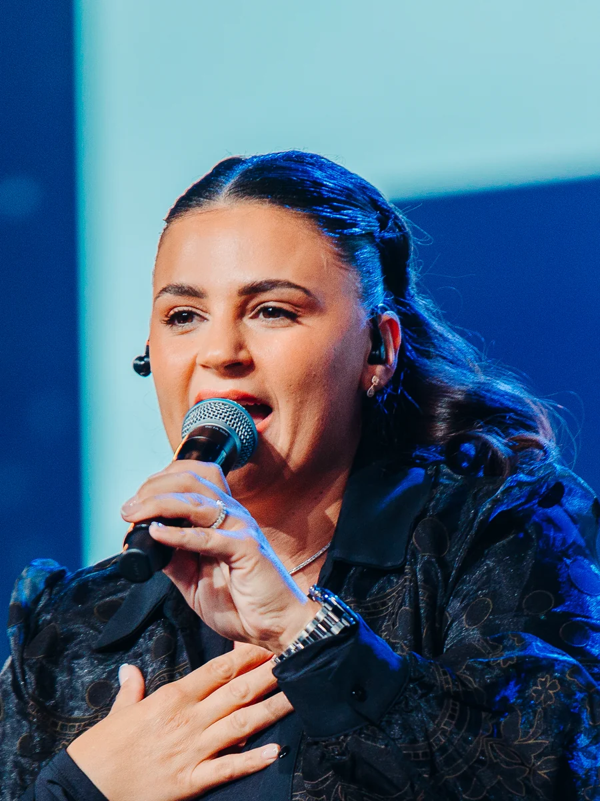

Évangélisation & guérison, de ville en ville. Depuis 2024.
Nous rassemblons des églises et des ministères différents.
Nous allons de ville en ville annoncer Jésus-Christ.
Dans des salles ouvertes à tous, gratuitement.
Nous croyons que l'unité du corps de Christ ouvre les cœurs,
que la guérison suit l'annonce de l'Évangile,
et qu'une ville confiée à Dieu peut changer.

Chaque événement repose sur les églises de la ville. Ce sont elles qui invitent, qui accompagnent, et qui accueillent ensuite ceux qui ont donné leur vie à Jésus.
Dès qu'une ville est annoncée, vous recevez un message : avant l'ouverture des inscriptions, et avant que la salle ne se remplisse.